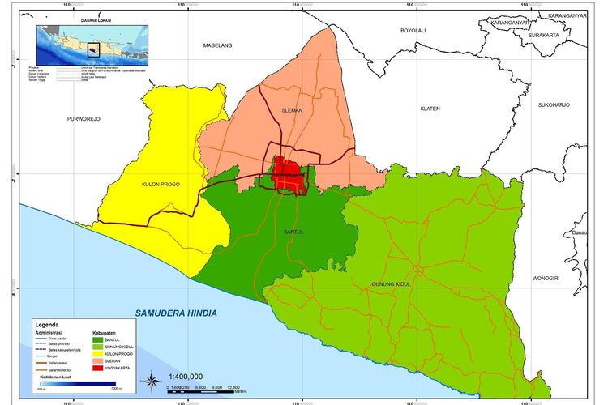
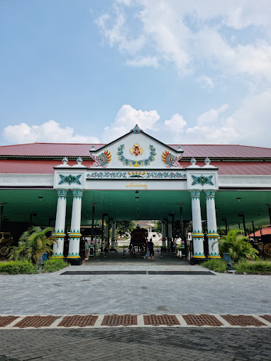
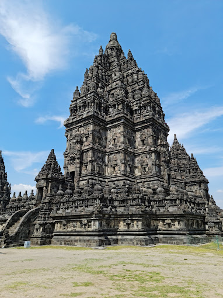

Sejarah

Kata Yogyakarta berasal dari kata Yogya yang berarti "sejati" atau "benar-benar" dan karta
yang berarti "kesejahteraan" atau "kebahagiaan". Sehingga Yogyakarta secara harfiah berarti
"kesejahteraan sejati" atau "kebahagiaan sejati".
Yogyakarta memiliki sejarah yang kaya, terutama sebagai pusat kebudayaan dan pemerintahan di
masa lampau, dengan adanya Kesultanan Ngayogyakarta Hadiningrat yang masih eksis hingga kini.
Kota Yogyakarta berdiri pada 13 Februari 1755 menurut Perjanjian Gianti,
dengan Sultan Hamengku Buwono I mendirikan Ngayogyakarta Hadiningrat dan ibu kotanya di Yogyakarta,
sebelum akhirnya menjadi Kota Praja setelah Kemerdekaan dan memperoleh otonomi penuh sesuai Undang-undang No.22 Tahun 1999.
Geografis

Kota Yogyakarta terletak di bagian selatan Pulau Jawa, dengan wilayahnya yang sebagian besar
dataran rendah. Kota ini dikelilingi oleh pegunungan, terutama Gunung Merapi di sebelah utara.
Ketinggian Kota Yogyakarta bervariasi, namun secara umum berada pada kisaran 100-300 meter di
atas permukaan laut.
Sungai-sungai kecil seperti Sungai Winongo dan Sungai Code mengalir melalui kota ini, memberikan
pasokan air untuk kebutuhan sehari-hari dan irigasi pertanian.
Wisata
Yogyakarta merupakan salah satu destinasi wisata utama di Indonesia, terkenal dengan kekayaan
budaya, sejarah, dan keindahan alamnya.
Kraton Yogyakarta

Kraton Yogyakarta adalah istana kerajaan yang masih berfungsi hingga saat ini. Pengunjung dapat
mengunjungi kraton dan melihat berbagai koleksi seni dan benda-benda bersejarah yang ada di
dalamnya.
Candi Prambanan

Candi Prambanan adalah kompleks candi Hindu terbesar di Indonesia, yang terkenal dengan arsitektur
dan relief-reliefnya yang indah. Pengunjung dapat menikmati keindahan candi serta menyaksikan
pertunjukan tari Ramayana di malam hari.